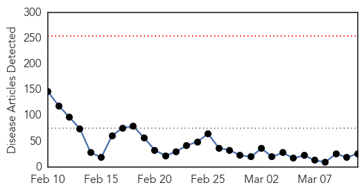
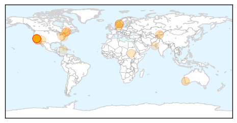

Unknown
30-Day Web Trend
1 alerts, 0 warnings

30-Day Twitter Trend
0 alerts, 0 warnings

Article Locations

Article Confidences
Top Articles:
- 0.991
- Ross River virus reduced thanks to lack of rain
- 0.970
- Mutating H7N9 bird flu may pose pandemic threat, scientists warn
- 0.969
- Mutating H7N9 bird flu may pose pandemic threat, scientists warn
- 0.967
- Mutating H7N9 bird flu may pose pandemic threat, scientists warn
- 0.967
- Mutating H7N9 bird flu may pose pandemic threat, scientists warn
- 0.966
- Mutating H7N9 bird flu may pose pandemic threat, scientists warn
- 0.917
- Chicago Tribune
- 0.917
- Chicago Tribune
- 0.917
- Chicago Tribune
- 0.917
- Chicago Tribune
- 0.917
- Chicago Tribune
- 0.917
- Chicago Tribune
- 0.917
- Chicago Tribune
- 0.917
- Chicago Tribune
- 0.917
- Chicago Tribune
- 0.917
- Chicago Tribune
- 0.917
- Chicago Tribune
- 0.917
- Chicago Tribune
- 0.917
- Chicago Tribune
- 0.917
- Chicago Tribune
- 0.917
- Chicago Tribune
- 0.917
- Chicago Tribune
- 0.917
- Chicago Tribune
- 0.917
- Chicago Tribune
- 0.917
- Chicago Tribune
- 0.917
- Chicago Tribune
- 0.917
- Chicago Tribune
- 0.917
- Chicago Tribune
- 0.917
- Chicago Tribune
- 0.910
- The world windows to Thailand
- 0.905
- H5N2 Bird Flu Confirmed In Two Missouri Turkey Facilities
- 0.903
- Radical vaccine design effective against herpes viruses
- 0.893
- Officials urged to stop HIV’s spread, National, Phnom Penh Post
- 0.865
- 100 Palestinians diagnosed with Brucellosis so far in 2015
- 0.856
- Water crisis surfaces memories of giardia outbreak in Tuna Valley: News
- 0.803
- Blinding Cases Of Syphilis On The West Coast Prompt Health Alert In LA County
- 0.790
- Poultry producers fall with avian flu discoveries
- 0.781
- Ohio State Representative John Patterson announces resolution to fight Lyme disease
- 0.774
- Ross River vaccine not considered financially viable to manufacture
- 0.759
- Hayward tuberculosis case draws health workers to school
- 0.744
- Military joins fight to contain typhoid
- 0.743
- Tuberculosis testing to take place Friday after confirmed case at Conway High
- 0.719
- Facing Up to Chronic Disease by George Weisz
- 0.702
- Parkland claims success in preventing hospital-associated infections
- 0.697
- Los Angeles DOH Reports 2 Cases Of Blinding Syphilis
- 0.688
- Raw Cashew Cheese Sickened 17 with Salmonella in 2014
- 0.675
- Ross River vaccine ‘not viable’
- 0.670
- Manning River Times
- 0.660
- State records sharp increase in HFMD cases – BorneoPost Online
- 0.627
- Bird flu found in second turkey flock in Missouri
Showing top 50 articles...
Top Tweets:
- 0.526
- Most indicators used to track flu severity are declining, but flu hospitalizations continue to be reported. http://t.co/o2Batjmisd
Measles
30-Day Web Trend
0 alerts, 0 warnings

30-Day Twitter Trend
2 alerts, 0 warnings

Article Locations
Article Confidences

Top Articles:
- 0.990
- Lanaudière health officials confirm 119 cases of measles
- 0.984
- Quebec Cases Spike To 119 After Infected Student Attended School
- 0.984
- Measles outbreak in Quebec grows, tally now 119
- 0.977
- UPDATE: 136 measles cases in Lanaudière - Montreal
- 0.974
- Measles spike: 119 cases confirmed northeast of Montreal
- 0.974
- Measles spike: 119 cases confirmed northeast of Montreal
- 0.966
- Confirmed case of measles in Oslo
- 0.955
- Broncos fans faced measles risk as Brisbane on alert
- 0.950
- Health officials urge measles vaccinations
- 0.941
- Kyrgyzstan: Bishkek Hopes it Has Passed Peak Measles
- 0.933
- Health officials say 119 measles cases in Quebec
- 0.925
- Are a Safe Choice for Parents Vaccines?
- 0.904
- Quebec measles outbreak grows to 119 confirmed cases including student
- 0.904
- Quebec measles outbreak grows to 119 confirmed cases including student
- 0.883
- Measles cases jump to 119 in Quebec area of Canada
- 0.876
- Health Alert in LA County, Several Blinding Cases of Syphilis on the West Coast Reported
- 0.841
- Dana Hills High School
- 0.803
- Number of measles cases in Quebec jumps to 119
- 0.785
- Measles cases surge to 119
- 0.746
- 10 Top Facts About Measles Outbreaks Through the Years
- 0.740
- Health Needs of Refugees and IDP Children Including Vaccination
- 0.703
- Parents Should Be Forced to Vaccinate?
- 0.650
- Measles confirmed in Oslo
- 0.582
- Urgent vaccination urged as peak season of measles starts
- 0.577
- Our Opinion: Vaccination issue begs for open debate
- 0.568
- Health Bulletin
Top Tweets:
-
No tweets found for Mar 11, 2015